Obsah
Obrozenecká věda
Obrozenecká literatura
Obrozenecké divadlo
+ Lidová slovesnost
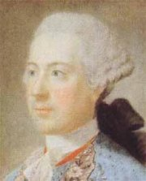
Císař Josef II.
|
ČESKÉ NÁRODNÍ OBROZENÍ
České národní obrození probíhalo od 70. let 18. století. Za jeho konec bývá považován rok 1848, ale charakter kultury zůstával velmi podobný až do konce 19. století. Během této doby se díky nesmírnému úsilí několika buditelů zformoval český národ. Obrozenci budovali národní identitu především na příslušnosti k českému jazyku a slavné historii. Český nacionalismus byl velmi umírněný. Soustředil se na vědeckou práci, uměleckou tvorbu a osvětovou činnost. Doprovázel ho sklon k idealizaci české historie i celého národa. Narozdíl od podobných hnutí v ostatních zemích nebyl nikterak revoluční (situace se změnila až v roce 1848).
České vlastenectví doprovázelo posilování vztahů s ostatními slovanskými národy, do kterých vkládal velké naděje už německý preromantik Johann Gottfried Herder (1744-1803), autor sbírky lidové slovesnosti Hlasy národů v písních a pojednání Myšlenky k filozofii dějin lidstva. Zrodil se nereálný politický projekt slovanské vzájemnosti (Kollár), který předpokládal spojení všech slovanských národů pod nadvládou Ruska, jediného samostatného státu Slovanů. Realističtější politiku zvolili austroslavisté (Palacký), kteří usilovali o rovnoprávné postavení slovanských národů v rámci habsburské monarchie, ale i oni byli neúspěšní.
|
Periodizace
Periodizace národního obrození není jednotná. Záleží na kritériu, které si literární historikové zvolí. Podle uměleckých směrů rozlišujeme období klasicismu a osvícenství, preromantismu, romantismu a realismu. Podle jeho charakteru dělíme obrození na fázi defenzivní a ofenzivní. Odlišné byly přístupy generační – Dobrovský (1. generace), Jungmann (2. generace). Významné jsou také mezníky politické, domácí – nástup osvícenských panovníků Marie Terezie (1740-1780) a Josefa II. (1780-1790), korunovace Leopolda II. českým králem (1791), metternichovský policejní absolutismus (1815-1848), revoluce v habsburské monarchii (1848), i zahraniční – Velká francouzská revoluce (1789-1794), napoleonské války (1799-1815), revoluce v Polsku (1830) a jaro národů (1848).
|
Národní buditelé
Které národní buditele znáš? Čím se proslavili?
|
Národní buditelé
První národní buditelé si předsevzali splnění mnoha úkolů. Nejdůležitější bylo, aby se čeština stala jazykem vědy a vysokého umění. Nejdříve se zdálo, že proti latině a němčině nemá žádnou šanci. Česky se učili pouze nejmladší žáci, ale postupně vznikaly české střední školy a v češtině se začalo přednášet také na univerzitě. Zvyšovala se i úroveň literatury a stále více spisovatelů si volilo češtinu. Ta byla běžným jazykem na venkově, měšťané i šlechta ale mluvili německy. Úsilí buditelů se soustředilo hlavně na ně. Buditelé demonstrovali své vlastenectví českými jmény (Josef Krasoslav Chmelenský, František Ladislav Čelakovský, Karel Jaromír Erben), vlastní literární tvorbou v češtině a někteří z nich neváhali podpořit národní myšlenku podvodem – Rukopis královédvorský a zelenohorský. Jejich úsilí bylo nakonec úspěšné a český národ se ve 2. polovině 19. století začal emancipovat i politicky.
|
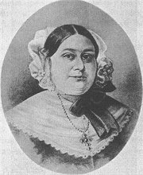
Magdalena Dobromila Rettigová
|
Jazykové obrany
První fáze národního obrození se někdy nazývá termínem obranná (defenzivní).
|
Jazykové obrany
Snaha osvícenských panovníků o jazykovou centralizaci (důsledné prosazování němčiny) v celé habsburské monarchii vedla k obranné reakci. Obrozenci začali zdůrazňovat význam češtiny a upozorňovali na nebezpečí jejího úplného nahrazení němčinou. V této době začíná vycházet řada jazykových obran. Pelcl vydává (sto let po jejím vzniku) obranu Balbínovu v latině. Další obrany už byly české. Nejznámější z nich je Obrana jazyka českého proti zlobivým jeho utrhovačům od Karla Ignáce Tháma (1763-1816). Šlo o programové texty, ve kterých buditelé propagovali český národ i jazyk a srovnávali slavnou minulost českých zemí se současným stavem.
|
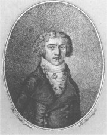
Karel Ignác Thám
|
Česká společnost
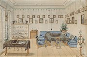
Dobový interiér
|
Česká společnost
Díky josefínským reformám se začala proměňovat celá společnost. Venkované (bývalí nevolníci) se mohli svobodně stěhovat a většinou mířili za prací do měst, kde se tak posiloval český živel. Mezi šlechtou převládalo vlastenectví zemské (příslušnost k českému území), nikoli národní (často ani češtinu neovládali), ale někteří šlechtici finančně podporovali první české buditele. Městské obyvatelstvo mluvilo většinou německy, ale i zde padla snaha obrozenců na úrodnou půdu. Nejtěžší bylo prosadit češtinu jako oficiální jazyk vysoké kultury a vědy, protože neměla dostatečnou slovní zásobu.
|
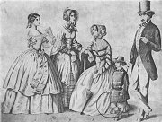
Měšťanská móda ve 40. letech 19. století
|
Počátky českého novinářství
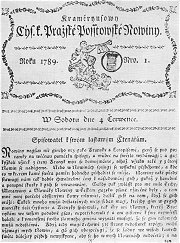
Krameriovy noviny
|
Počátky českého novinářství
První české noviny vydával Karel František Rosenmüller. Nesly název Český Postilión neboli Novíny české (1719-1772). Václav Matěj Kramerius (1753-1808) vydávání českých novin obnovil. Krameriusovy c.k. pražské poštovské noviny (1789-1825), původní název Schönfeldské c.k. Pražské noviny, později Krameriusovy c.k. vlastenecké noviny, měly literární přílohu Pražský posel. Kramerius byl rovněž majitelem knihkupectví a nakladatelství Česká expedice, významného centra obrozenecké kultury. Důležitou roli hrála literární příloha Pražských novin Česká včela (1834-1850) a beletristické časopisy jako Hlasatel český, Prvotiny pěkných umění, Rozmanitosti, Jindy a nyní, Květy, později Květy české (1834-1850), Čechoslav a Dobroslav. V jejich redakcích působil Čelakovský, Tyl nebo Karel Havlíček Borovský.
|
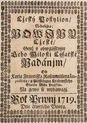
Český Postilión, první české noviny
|
Výtvarné umění
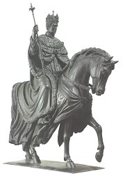
Josef Max: František I. (Hold českých stavů)
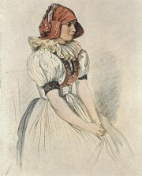
Josef Mánes: Hanačka
|
Architektura, sochařství, malířství
České výtvarné umění se v první fázi národního obrození významně nelišilo od světového. Umělci se hlásili ke klasicismu a empíru, později i preromantismu a romantismu. V měšťanském prostředí se prosadil biedermeier. Vlastenecké náměty se objevují velmi brzy. Typické jsou výjevy z české historie a bájné minulosti, idylické obrázky života na venkově nebo krajinářské scenérie. Portréty obrozenců malovali Antonín Machek (1775-1844), František Tkadlík (1786-1840) a František Horčička (1776-1856). Dochovaly se i portréty fotografické (daguerrotypie). Sochařství se věnoval Václav Prachner (1784-1832) a Josef a Emanuel Maxové, krajinomalbě Karel Postl (1769-1818) a František Xaver Rektořík (1793-1851) a vedutám Vincent Morstadt (1802-1875). Cyklus lidových krojů nakreslil Josef Mánes (1820-1871), předním malířem byl rovněž jeho bratr Quido Mánes (1828-1880) a otec Antonín Mánes (1784-1843). K nejvýznamnějším stavbám tohoto období patří klasicistní zámek Kačina a Nosticovo divadlo v Praze nebo městské komplexy Terezín, Josefov a Mariánské Lázně.
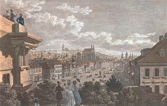
Morstadt: Pohled na Koňský trh
|
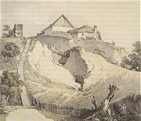
Rektořík: Chalupa na kopci
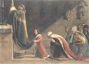
Tkadlík: Sv. Václav a sv. Ludmila při mši

Antonín Mánes: Křivoklát a Kokořín v bouři
|
Český jazyk
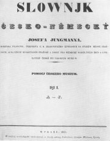
Česko-německý slovník Josefa Jungmanna, heslo wlast
|
Český jazyk
Největší zásluhu na rozvoji českého jazyka měl Josef Jungmann. Jelikož čeština neměla v jeho době dostatečnou slovní zásobu, rozhodl se sepsat Česko-německý slovník (5 dílů, 120 000 hesel), ve kterém hledal k německým slovům chybějící české ekvivalenty. Využíval zapomenutá slova ze starých českých textů, přejímal výrazy z cizích jazyků (především slovanských) a některá slova nově tvořil (názvy měsíců). Kvalitu češtiny prakticky ověřoval na četných překladech (Ztracený ráj, Atala...). Jungmannův jazykový cit vyniká ve srovnání s puristickými pokusy jiných buditelů, jejichž nová slova se neujala (podnosnice libočudná, nosočistoplena...), nebo s neúspěšným projektem Jana Kollára, který se snažil spojit češtinu se slovenštinou.
Při vytváření spisovného jazyka se obrozenci obrátili k renesanční češtině doby Veleslavínovy, přeskočili tak několik staletí přirozeného vývoje. Z nářečí jim bylo nejbližší středočeské.
|
Různé názory na novou podobu českého pravopisu se odrazily ve vzniku vlasteneckých skupin, které spolu vzájemně soupeřily o vliv (ypsilonisté, iotisté, ouáci, auáci, wisté atd.). Která z nich nakonec vyhrála?
Obdobný proces jako v Čechách probíhal také na Slovensku, nejvýraznější postavou slovenského národního obrození byl Ľudovít Štúr.
|
Internetové stránky
Hrejsa: Toleranční patent z 13. října 1781
Kramerius: Železná košile
Herder: Slovanské národy
Bednář: Toleranční patent
Denis: Konec samostatnosti české
Herben: Otázka náboženská v našem probuzení
Ľudovít Štúr, slovenský buditel
České umění 19. stol., Trojský zámek, Galerie hl.m. Prahy
Sbírka českého malířství 19. století, Galerie ostrava
Kačina, klasicistní zámek
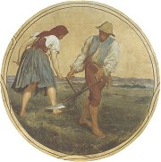
Josef Mánes: Červen (orloj)
|
Doporučená četba
Blažíčková-Horová, Naděžda: Malířská rodina Mánesů, Národní galerie, Praha 2002 (katalog k výstavě)
Černý, František: Obrázky z dob našeho probuzení, Praha 1890
Dějiny českého výtvarného umění III, 1780-1890
Hanzal, J: Od baroka k romantismu, Ke zrození novodobé české kultury, Praha 1971
Haubelt, J.: České osvícenství, Praha 1986
Horálek, Karel: Folklór a světová literatura, Academia, Praha 1979
Hroch, Miroslav: Na prahu národní existence, Mladá fronta, Praha 1999
Jirásek, Alois: F.L.Věk (román)
Johanides, Josef: František Vladislav Hek, Melantrich, Praha 1976
Kočí, J.: České národní obrození, Praha 1988
Langhamerová, Jiřina: Lidové kroje z České republiky, NLN, Praha 2001
Lněničková, Jitka: České země v době předbřeznové, 1795-1848, Libri, Praha 1999
Macura, Vladimír: Znamení zrodu, České obrození jako kulturní typ, Československý spisovatel, Praha 1983
Macura, V.: Český sen
Máchal, J.: Slovanské literatury
Novotný, Jan: Matěj Václav Kramerius, Melantrich, Praha 1973
Petráň, J.: Počátky českého národního obrození (1770-1791), Praha 1990
Plch, Jaromír: Antologie z české literatury národního obrození, SPN, Praha 1978
Polák, Josef: Česká literatura 19. století
Pražák, A.: České obrození, Praha 1947
Staňková, Baran: Lidové umění z Čech, Moravy a Slezska, Praha 1947
Vondruškovi, Alena a Vlastimil: Tradice lidové tvorby, Artia, Praha 1988
|
Připrav si referát o některé z uvedených knih nebo internetových stránek.
Jak se lišil pravopis v 19. století od současného?
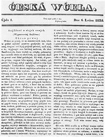
Časopis Česká včela

Český klasicistní zámek Kačina
|
|